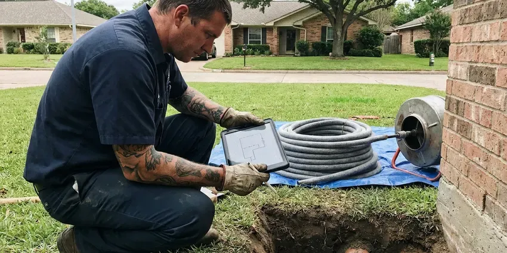

Gas Leak Repair in Asheville, NC
Natural gas or propane, inside or buried, HFN Plumbing finds and fixes gas leaks in Asheville, NC and tests the whole system before relight.
- Gauge Pressure Tested Repairs
- Fast Gas Leak Response
- Fully Insured Gas Work
- Appliance Connector Swaps

Smell Gas? Get a Repair in Asheville, NC.
We find the leak, repair it and test the system so the utility can restore service.
Gas Leak Repair in Asheville, NC
HFN Plumbing gets a lot of calls after the utility has locked a meter. Gas stays off until a licensed contractor makes the repair and passes a pressure test, which is where we come in. Those calls go to the front of the line, since a locked meter means cold showers and no stove. Outdoor branches get tested on the same visit.
Our expertise includes:
- Meter riser repair and replacement
- Appliance connector and ball valve replacement
- Electronic combustible gas leak detection at each joint

Additional Plumbing Repair Services in Asheville, NC
We offer expert plumbing repair services across Asheville, NC to stop leaks, clear blockages, and keep every fixture working the way it should.


Customers
Why Choose HFN Plumbing for Gas Leak Repair in Asheville, NC?
Older houses and homes with settling foundations put strain on rigid gas pipe, especially where it passes through a slab or a foundation wall. Movement cracks threads and bends risers. Where pipe crosses masonry we add a sleeve and a flexible section to take the next shift.
- Code Compliant, Repairs follow the local fuel gas code in Asheville, NC, with permits pulled where needed.
- Gauge Tested, Every repair is tested on a gauge before the gas goes back on.
- Permits Handled, We pull the permit and book the inspection so you do not have to.
Citywide Coverage
We run gas calls in every part of Asheville, from the older blocks near the center of town to the newest subdivisions on the edge. The older neighborhoods mostly have steel in the yard and black iron in the house. Newer homes run CSST. Both kinds of parts ride on the truck, which keeps it to one visit most of the time.
Experienced Team
The pipe we work with spans eras, black iron with threaded fittings, CSST from TracPipe and Gastite, and yellow polyethylene for buried runs. Copper gas lines still turn up in some older homes too. Each needs its own fittings. Mixing brands at a joint is a fast way to fail an inspection, so we do not.
Safety-First Approach
Excavation never starts without an 811 locate. Your gas line shares the dirt with power and water. We hand-dig near any marked utility and bed new polyethylene in sand, then lay tracer wire so the line can be found later.
Trusted Certified Asheville Plumbing Services Professionals
At HFN Plumbing, we are proud to offer certified plumbing services throughout Asheville, NC. Credentials matter in this trade. Every repair, install and maintenance visit follows strict safety and quality rules, and the plumbers doing the work carry recognized industry credentials.
Call Us Now PHCC Plumbing Contractor Recognition
PHCC Plumbing Contractor Recognition Better Business Bureau (BBB) Accreditation
Better Business Bureau (BBB) Accreditation Angi Certified Pro
Angi Certified Pro ISO 9001 Quality Management Certification
ISO 9001 Quality Management CertificationWhat Our Gas Leak Repairs Cover in Asheville, NC
Permitting and Code Compliance in Asheville, NC
Most jurisdictions want a permit for new gas pipe or a moved line, though a straight connector swap often does not need one. You will know before we start whether a permit applies. The fee goes on the estimate. The work follows North Carolina adopted fuel gas code and any local amendments. The signed inspection card goes to you, and a future buyer's inspector will likely ask to see it.

Appliance Gas Line Repair in Asheville, NC
Most appliance leaks show up at the flex connector or the shutoff valve behind the appliance, usually right at a flare nut where the two meet. Connectors get bent every time a range is pulled out to clean behind it. Valves weep at the stem. The fix is usually a new coated connector and a new ball valve, plus a drip leg if the appliance lacks one. Each joint gets a detector pass and a bubble test before the pilot is lit again.
Interior Gas Pipe Repair in Asheville, NC
Inside the house, gas leaks hide at unions in the basement and at the threaded nipple behind the furnace, places nobody looks. We work from the meter inward, testing each section as we go. Drywall stays intact when possible. Rerouting with CSST past a leak in a finished wall is often cheaper than cutting and patching drywall. Nothing is turned back on until the gauge holds steady.
Permit and Inspection Coordination in Asheville
Replacing more than a connector usually means a permit, and in Asheville the inspector will want to see a gauge holding pressure before the pipe is covered. The permit and the inspection booking are on us. Most inspections take under twenty minutes. The test is set to whatever the local fuel gas code requires, often a few psi held for fifteen minutes or longer. The signed permit card stays with your house.
Gas Line Repair and Replacement in Asheville, NC
Black iron pipe with threaded fittings is still the most common interior gas pipe, and the leak is nearly always at a thread, not in the middle of a length. The joint gets broken, cleaned and remade with new pipe dope rated for gas. Cracked fittings get replaced. Where a length has rusted badly, usually near a damp crawlspace vent, we cut back to sound pipe and splice in new. Every remade joint gets a detector check and a gauge test.
Underground Gas Line Repair in Asheville
Yard lines run from the meter to the house, and often on to a detached garage, a pool heater, a grill or an outdoor kitchen. Steel pipe in the ground corrodes wherever the wrap was nicked during the original install. Roots and settling do damage too. After an 811 locate, we excavate, cut out the failed run and lay polyethylene with a tracer wire beside it. Sand goes around the new pipe before backfill, per Asheville trench rules.
Emergency Gas Leak Services in Asheville
That sulfur smell is mercaptan, an odorant the supplier adds because natural gas and propane have almost no smell on their own. A strong smell means walk out and leave the door open. Do not flip switches. Once the utility has made the meter safe, we come out and make the repair. We bring fittings, pipe and connectors on the truck, so most leaks are fixed on the first visit.

Propane Gas Leak Repair in Asheville, NC
Propane behaves differently from natural gas because it is heavier than air, so a leak settles into basements and crawlspaces instead of rising. The first-stage regulator at the tank and the second-stage regulator at the house both get checked. Low spots get sniffed first. If the supplier owns the tank, they handle the tank side and we handle the piping from there to the appliances. Rural properties with buried tanks get a line test too.
Gas Leak Repair Plumbers Near You in Asheville, NC
Outdoor gas lines produce a surprising share of our calls, because pool heaters and fire pits sit at the end of long buried runs. Fence augers and sprinkler trenching cut more of these lines than rust does. Look for dead grass. That branch gets valved off and tested on its own.
Response time is only half of it. A gas call also needs a licensed plumber who will test the whole system, not just tighten the fitting you pointed at. Our Asheville, NC crew carries a manometer and a combustible gas detector on every call. Most leaks are found and fixed in the same visit.
HFN Plumbing at a Glance
- Fully licensed plumbing team covering Asheville, NC
- Same-day appointments and 24/7 emergency response
- Upfront, flat-rate pricing before work begins
- 4.8-star rated by 840+ North Carolina customers
Asheville Map
Asheville Information
- Population
- 95,056
- Area codes
- 828/919/423
- Service area
- Asheville and towns within a 40 mile drive
- Nearby
- Hickory, Gastonia, Huntersville, Mooresville
Coastal areas have sandy soil and high water tables, which affect how sewer lines and septic systems perform. Settling soil puts stress on threaded joints and the riser at the meter, so Asheville homes with older yard lines see more leaks than most.
Talk to a Plumber
Reach out to HFN Plumbing for honest, reliable plumbing from people who know the trade in Asheville, NC.
Our Specialized Plumbing Services in Asheville, NC
At HFN Plumbing, we handle the full list of plumbing services across Asheville, NC. From leak detection to full system installs, our team works fast and charges fair prices on homes and commercial properties alike. Here are the core services we offer:


Our Gas Leak Repair Process in Asheville, NC
Here is how a gas leak call goes with HFN Plumbing, from the first phone call to the relight.
Call Us
Once you are outside and the utility has been called, phone (980) 364-4317. Dispatch asks where you smell it and whether the meter was shut or tagged.
Make It Safe
The tech confirms the gas is off, ventilates the area and clears ignition sources before any tools come out.
Find the Leak
A gauge confirms the system is losing pressure, then a combustible gas detector and bubble solution narrow it to one joint.
Frequently Asked Questions About Gas Leak Repair in Asheville
Small fitting or connector repairs usually run $150 to $450. Interior line work is often $300 to $1,000. A buried line replacement is usually $1,000 to $4,000, based on how long and how deep it runs.
We stand behind our gas work with a written workmanship warranty. If a repair we made leaks during that period, we come back and fix it.
A connector swap or a remade fitting takes about an hour, testing included. Interior pipe repairs run two to four hours. Buried line replacements usually take most of a day, longer if the run passes under a driveway or a locate is slow to come back.
Yes, we repair propane piping and appliance hookups on the house side of the regulator. Your supplier handles the tank and its first regulator.
Get everyone outside into fresh air and call 911. You cannot smell CO, which is why the alarm matters. After the fire department clears the house, we inspect the appliances and their flues, because CO usually comes from a burner starved for air or a blocked vent.
Not with gas. Most jurisdictions limit gas piping work to licensed plumbers or gas fitters, and a botched joint is how house fires start. Shutting the valve at the appliance or the meter is fine if you can do it safely.
CSST is safe when it is installed by a certified installer, sized correctly and bonded to the house electrical ground as the manufacturer requires. Unbonded tubing can be hurt by lightning. We check the bond on every CSST repair and add one if it is missing.
No. Gas joints need the right sealant and a pressure test afterward, and most jurisdictions require a licensed plumber or gas fitter to do the work. Undersealed joints often start leaking months later. An unlicensed repair can also give your insurer a reason to deny a claim after a gas fire.
What Our Customers Say About Our Plumbing Experts

Lisa C.
Water was pouring out from under the washing machine on a holiday weekend. HFN Plumbing talked me through closing the valves over the phone and had a plumber at the house within ninety minutes. It was a burst fill hose.
Emergency Plumbing · Hickory, NC
Brian W.
I smelled gas behind the dryer and called right away. The plumber found a corroded flex connector, replaced it, and pressure tested the whole line before turning the gas back on. He let me watch the gauge hold steady for fifteen minutes.
Gas Line Repair · Huntersville, NC
Jessica T.
We were adding a gas range in a kitchen remodel and needed a new line run from the meter. The plumber pulled the permit, ran the pipe through the crawl space, and had it inspected and approved within the week.
Gas Line Repair · Huntersville, NCMegan L.
Our upstairs tub drained so slowly that every shower turned into a bath. HFN Plumbing pulled a wad of hair out of the stopper and then snaked the line past the trap. Three months later it still drains fast.
Drain Cleaning · Mooresville, NC
Robert G.
The camera showed a full break in our clay sewer line near the street. HFN Plumbing replaced it with a trenchless pipe burst, so the only digging was two small pits in the yard. They let us watch the footage before and after.
Sewer Line Replacement · Asheville, NCKevin O.
Before buying our house I paid for a sewer camera inspection. HFN Plumbing found a belly in the line that held standing water about forty feet from the cleanout. We used the video to get the sellers to fix it before closing.
Sewer Camera Inspection · Mooresville, NC